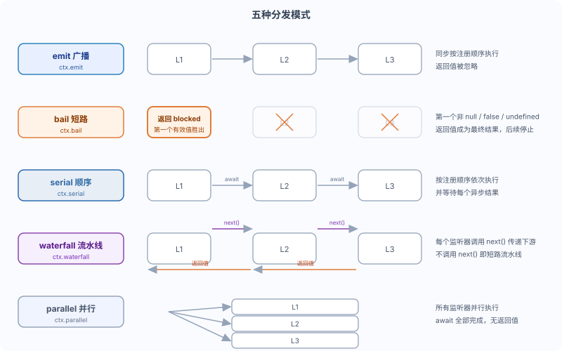

DeepSeek Harness Event System: emit / bail / serial / waterfall
How do plugins communicate in a loosely coupled way? Events are Cordis's core communication mechanism.
Harness extensively uses events to implement extensible extension points. This article explains the five dispatch modes clearly.
Basic Usage
Events are split into two ends: listening and triggering.
Example
ctx.on('event-name', (payload) => {
// Handle events
})
// Trigger event: broadcast to all listeners
ctx.emit('event-name', payload)
Listeners registered via `ctx.on` are automatically removed when the plugin is unloaded.
Five distribution modes
Cordis provides multiple dispatch modes, suitable for different interaction contracts.

| Mode | Distribution method | Whether to await | Sequence | Whether there is a return value | Typical scenarios |
|---|---|---|---|---|---|
| emitBroadcast | ctx.emit | no | In registration order | no | Notification type: all listeners observe |
| bailShort circuit | ctx.bail | no | In registration order | Yes | Decision type: the first valid return value wins |
| serialSequence | ctx.serial | Yes | In registration order | Yes | Phased initialization: execute in order and wait |
| waterfallPipeline | ctx.waterfall | no | In registration order | Yes | Processing chain: wrap downstream return values layer by layer |
| parallelParallelism | ctx.parallel | Yes | All parallel | no | Fan-out: multiple listeners process in parallel |
Each event has exactly one dispatch mode, and can only be dispatched through the corresponding method.
The official getting-started documentation marks `waterfall` as “not await”; however, since listeners are usually async functions, tutorial examples commonly write `await ctx.waterfall(...)` to wait for the final result of the entire processing chain. Just remember this difference – both styles are acceptable.
emit: broadcast
All listeners execute synchronously, and return values are ignored.
Example
ctx.emit('my-plugin/ready', { id: 'runoob-worker-1' })
// Listener: receives ready message, prints log
ctx.on('my-plugin/ready', ({ id }) => {
console.log(`${id} is ready`)
})
bail: short-circuit
Listeners run in order; the first return value that is not `null`, `false`, or `undefined` becomes the final result.
Example
const result = ctx.bail('some-check', input)
// Listener: if the interception condition is met, return 'blocked', otherwise continue
ctx.on('some-check', (input) => {
if (shouldBlock(input)) return 'blocked'
// Return null / false / undefined to indicate 'I have no objection', letting subsequent listeners continue.
})
serial: execute sequentially
Listeners execute one by one in registration order, waiting for async results.
The first return value that is not null, false, or undefined terminates subsequent execution.
Example
await ctx.serial('setup-phase', context)
waterfall: pipeline
Each listener can wrap the downstream return value, forming a processing chain.
Listeners receive (...args, next); calling next() executes downstream listeners, and the downstream return value is returned to the current wrapping layer via next().
Example
const output = await ctx.waterfall('my-plugin/transform', input, async () => input)
// Listener side: must call next(), after obtaining the downstream result, process it once and then return.
ctx.on('my-plugin/transform', async (_input, next) => {
const downstream = await next()
return downstream.trim()
})
Waterfall listeners must call next(). Not calling next() short-circuits the entire pipeline; this is an intentional design for implementing interception or gateway logic.
Strategy listeners, when they hold decision authority, can return directly without calling next(), thereby blocking the entire chain.
Listeners that only annotate or observe must delegate to the downstream.
Type-safe events
Use TypeScript declaration merging to provide type safety for events.
Example
import '@deepseek-ai/cordis'
// Declaration merging: register event name and signature
declare module '@deepseek-ai/cordis' {
interface Events {
'my-plugin/ready': (payload: { id: string }) => void
'my-plugin/check': (input: string) => boolean | undefined
'my-plugin/transform': (input: string, next: () => Promise<string>) => Promise<string>
}
}
// After this, ctx.on('my-plugin/ready', ...) and ctx.emit('my-plugin/ready', ...)
// arguments will be automatically inferred; misspelling event names or parameter types will cause compile-time errors
Cordis events and session records
Harness's Cordis events follow namespace/action naming, e.g., agent/step, agent/request, agent/request-error, tools/result, and session/event.
Note the distinction between two types of events:
| Events | What is it | How to observe |
|---|---|---|
| agent/step, tools/result, etc. | Cordis events, distributed in real time | Directly ctx.on('tools/result', ...) |
| turn/*、step/*、tool/call、tool/result、compaction/* | Persisted session event types | Listen to session/event, check event.type |
turn/*, step/*, tool/call, tool/result, and compaction/* are persistent session event types, not the same-named Cordis events.
To observe them, listen to session/event and check event.type.
Hands-on example: logging plugin
The official documentation uses the following plugin to log tool calls and tool results, listening to the Cordis event `tools/result`.
Example
import type { Context } from '@deepseek-ai/cordis'
import '@deepseek-ai/dsh-tools'
export const name = 'tool-logger'
export function apply(ctx: Context) {
// Listen to the tools/result event: triggered every time tool execution completes.
ctx.on('tools/result', (exec, result) => {
// Print tool name and arguments
console.log(`[tool] ${exec.name}(${JSON.stringify(exec.arguments)})`)
// Concatenate the text blocks in the result content, and print only the first 100 characters.
const text = result.content
.map(block => block.type === 'text' ? block.text : '')
.join('')
console.log(`[tool result] ${text.slice(0, 100)}`)
})
}
This plugin prints the tool name, parameters, and result summary to the terminal after each tool call by the Agent.
Listeners are registered via `ctx.on` and are automatically removed when the plugin is unloaded.
Summary self-test
The five dispatch modes cover five types of contracts: broadcast, decision, sequential, pipeline, and parallel; waterfall must call next(); declare module merging provides type guarantees for event names and parameters.
Test yourself:
- Which method triggers each of the five dispatch modes? Which ones have return values?
- What happens if a waterfall listener does not call next()? Is this a bug or by design?
- For persistent session events like turn/start, which event should be listened to, and which field should be checked?
Click me to share notes
The note must be an extension of this article's content!
For article submission, click here
How to obtain the registration invitation code
Before sharing notes, you mustLog in！
How to obtain the registration invitation code